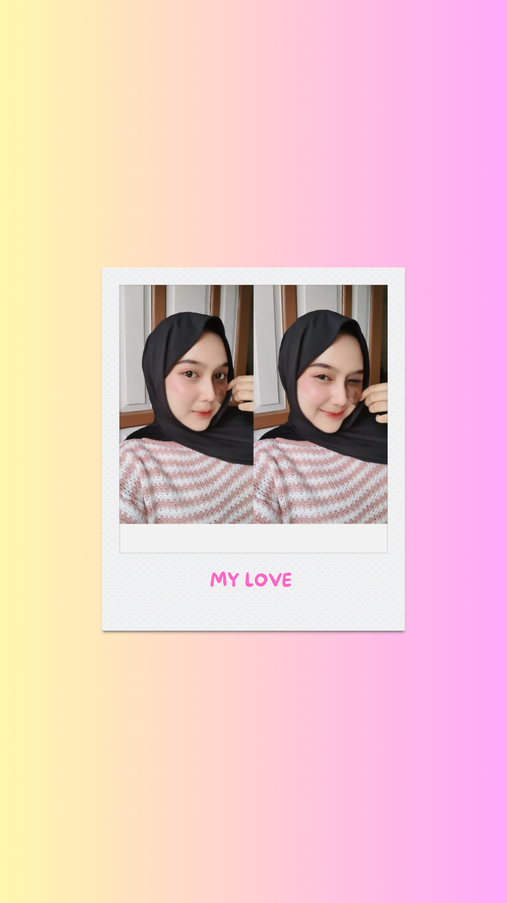

Selamat ulang tahun yang ke-18, sayangku.
Aku bersyukur banget punya kamu — anak farmasi yang kuat, pintar, dan selalu ada buat aku walau aku merantau dan sibuk kerja. Di usiamu yang baru ini, semoga Allah selalu melimpahkan kesehatan, rezeki, keberkahan, dan kebahagiaan untukmu. Semoga semua cita-citamu tercapai, ilmu yang kamu pelajari bermanfaat bagi banyak orang, dan setiap langkahmu selalu dimudahkan.
Ingat, ada aku yang akan selalu mendukungmu, sayang — dari jauh maupun dekat. Nanti kalau aku ada libur, aku akan kerumahmu dan ajak kamu main ke tempat apa saja yang kamu mau. Aku doakan kita bisa terus bersama sampai semua mimpi-mimpi kita tercapai. Aamiin.
Bagikan di WhatsApp